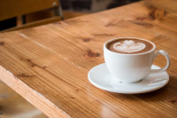

Cappuccino
O cappuccino é estrela nas cafeterias e teve sua origem na Itália. Ele se chama assim porque é uma referência aos frades Capuchinhos, os quais usam um capuz que serviu como inspiração para o nome da bebida.

Espresso
Inventado na Itália, em 1884, o espresso é a forma mais tradicional e antiga de preparar o café. Feito pela primeira vez por uma máquina patenteada por Angelo Moriondo, em Turim.
Latte
O latte, atualmente, tem se popularizado de forma considerável devido às impressionantes artes de espuma em cima da xícara. Essa bebida consiste em uma mistura de café com leite vaporizado.
Mocha
O mocha é bem parecido com a receita do cappuccino. A diferença é que, neste preparo, é necessário usar chocolate, que pode ser em calda ou em pó. Você fica à vontade para decidir conforme o seu gosto.